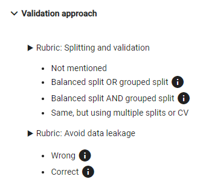

24 February 2024
In an academic setting, we aim to grade student projects as objectively as possible. The machine learning course in the Master of Computer Science Engineering at Ghent University used to have a project as a large part of the end grade of the course. Students gave three intermediate presentations that had to be graded by three evaluators: the professor and two teaching assistants (TAs). To maintain an objective scale of evaluation, we used a rubric system, where evaluators indicate objective requirements. To make the end result (about a hundred tables) easier to process, we automated the process using a custom built tool, which also included a Domain Specific Language (DSL).
The grading tool was named after the Greek goddess of justice, Themis (here, envisioned by Bing Copilot Designer).
To facilitate live grading of student projects without having to manually input grades from a stack of papers into an excel sheet, I developed a web application. It is based on a Spring and PostgreSQL backend and an Angular frontend. The application has an interface to create projects and set up the rubrics for different projects. During a presentation, graders can select the appropriate student (group) and tick off tasks that the students had to complete. For example:

After grading, a score overview for the different groups is automatically generated. This score overview is generated based on the criteria that the evaluators have selected. The professor and TAs assigned weights to every criterion a priori.
If a default weighted sum of scores was insufficient, a script could be written to compute the score with a different formula. Here, we opted for very simple arithmetic language (we had to run this on a VM with very limited resources). Here's an example script:
c1r1 = [Validation approach/Splitting and validation]
c1r2 = [Validation approach/Avoid data leakage]
c1 = 2 * $c1r1 + 1 * $c1r2
1 * $c1
When we run this script for a group, it first extracts the values for the criteria "Splitting and validation" and "Avoid data leakage" into two variables.
The values in these variables correspond to the a priori weights for each tick box that grades could select. For example, if the students did not account for data leakage,
the value of $c1r2 could be 0, indicating that they did not get a score for that criterion.
In the above example, setting up a correct train-validate-test split is twice as important as accounting for data leakage, because c1 = 2 * $c1r1 + 1 * $c1r2.
The final line in the script must be an expression that computes the final score for a group.